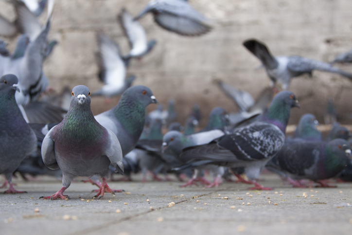
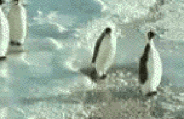
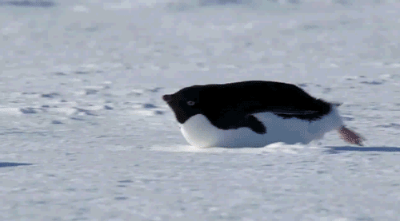
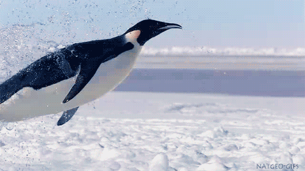
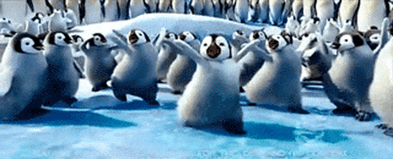
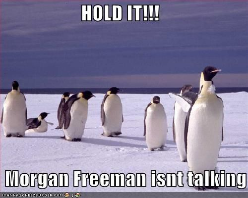
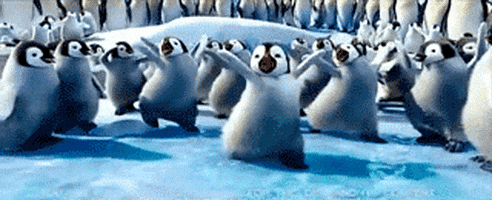
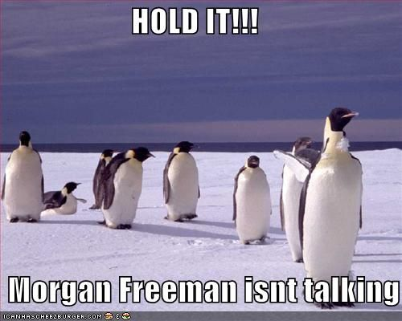

And yes, I made that spelling mistake on purpose. :3
I think birds are severely underrated. We rave about dogs, cats, and basically other animals
but we rarely mention about birds. I find that very unfair to these marvellous creatures because birds have the most
diversity, in my opion. They have numerous species and each specie has their own unique trait. Have you noticed that?
I'm going to show you birds that I think should deserve your attention.
1. Pigeons
Okay, hear me out.
In today's age, many people consider pigeons as a nuisance. Honestly, can't blame them.
They don't do much, and if they actually do something, it isn't anything good. Pigeons can also be a menance.
In Saint John, if you have any food on you, they pretty much swarm you. Literally.
Trust me. I learned that on my first day of my co-op work term.
Will never eat breakfast in King's Square again.

But, did you know that pigeons played a huge role in the First World War?
Soldiers used carrier pigeons to deliver messages when radios were unusable. These pigeons always delivered to the receiver,
and many of them had saved multiple troops by doing so. We sometimes forget that they also risked their lives doing
their duty since it required them to fly through warzones. Some were injured and some were even killed.
I think it's really important that we remember these carrier pigeons and other animals that
served during the wars since they did not ask to be involved in them. Despite everything, they did their best to complete their duty
and thus, ended up saving many lives.
Birds of Paradise are incredibly extravagant creatures. Their colours
are undeniably beautiful and they have something that is very unique that I am unable to explain.
My Science teacher in 10th grade introduced our class to them, and I just fell in love with them.
Notably, I fell in love with this boi *cue George Michael's Careless Whisper*
Look at that distinguished boi. He kinda looks like Moon Knight
(or Moon Knight looks like him :3).
Most importantly, I want you to know that this bird is a dancer. Don't believe me? Just watch the video yourself.
The boi cleans the branch, actually CLEANS the branch, before the female bird arrives and does his little dancey dance to court her?
This bird is an absolute legend, and deserves your every attention. Need I say more?
3. Penguins
PENGUINSSS!!!!
Penguins are probably the best birds that have ever existed in the universe. I'd never met someone who hates penguins,
so it's safe to say that we, as human beings, can collectively agree that penguins are awesome.
I mean, just look at the way they walk...

The way they glide...

How majestic they are...

And considering the fact that Hollywood even made movies about penguins is enough to prove that penguins are the standards for birds.


 


